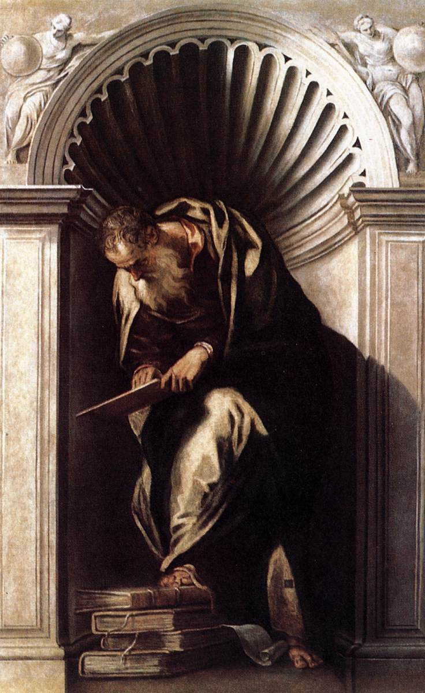

The Free Encyclopedia
| Content [hide] |
|---|
| 1. Historical Overview |
| 2. History by subject area |
| 3. See also |
| 4. References |
History is the systematic study and documentation of the human past. The period of events before the invention of writing systems is considered prehistory. "History" is an umbrella term comprising past events as well as the memory, discovery, collection, organization, presentation, and interpretation of these events. Historians seek knowledge of the past using historical sources such as written documents, oral accounts, art and material artifacts, and ecological markers. History is incomplete and still has debatable mysteries.
Stories common to a particular culture, but not supported by external sources (such as the tales surrounding King Arthur), are usually classified as cultural heritage or legends.[11][12] History differs from myth in that it is supported by verifiable evidence. However, ancient cultural influences have helped create variant interpretations of the nature of history, which have evolved over the centuries and continue to change today. The modern study of history is wide-ranging, and includes the study of specific regions and certain topical or thematic elements of historical investigation. History is taught as a part of primary and secondary education, and the academic study of history is a major discipline in universities.
Alexander III of Macedon (Ancient Greek: Ἀλέξανδρος,),romanized: Alexandros; (20/21 July 356 BC – 10/11 June 323 BC) commonly known as Alexander the Great, was a king of the ancient Greek kingdom of Macedon. He succeeded his father Philip II to the throne in 336 BC at the age of 20, and spent most of his ruling years conducting a lengthy military campaign throughout Western Asia and Egypt. By the age of 30, he had created one of the largest empires in history, stretching from Greece to northwestern India. He was undefeated in battle and is widely considered to be one of history's greatest and most successful military commanders.
Until the age of 16, Alexander was tutored by  Aristotle (/ˈærɪstɒtəl/;[1] Greek: Ἀριστοτέλης Aristotélēs, pronounced [aristotélɛːs]; 384–322 BC) was an Ancient Greek philosopher and polymath. His writings cover a broad range of subjects spanning the natural sciences, philosophy, linguistics, economics, politics, psychology and the arts. As the founder of the Peripatetic school of philosophy in the Lyceum in Athens, he began the wider Aristotelian tradition that followed, which set the groundwork for the development of modern science. See More . In 335 BC, shortly after his assumption of kingship over Macedon, he campaigned in the Balkans and reasserted control over Thrace and parts of Illyria before marching on the city of Thebes, which was subsequently destroyed in battle. Alexander then led the League of Corinth, and used his authority to launch the pan-Hellenic project envisaged by his father, assuming leadership over all Greeks in their conquest of Persia.
Archaeological site of Pella, Greece, Alexander's birthplace Alexander III was born in Pella, the capital of the Kingdom of Macedon,[8] on the sixth day of the ancient Greek month of Hekatombaion, which probably corresponds to 20 July 356 BC (although the exact date is uncertain).[9][10] He was the son of the erstwhile king of Macedon, Philip II, and his fourth wife, Olympias (daughter of Neoptolemus I, king of Epirus).[11][Note 1] Although Philip had seven or eight wives, Olympias was his principal wife for some time, likely because she gave birth to Alexander.[12] Several legends surround Alexander's birth and childhood.[13] According to the ancient Greek biographer Plutarch, on the eve of the consummation of her marriage to Philip, Olympias dreamed that her womb was struck by a thunderbolt that caused a flame to spread "far and wide" before dying away. Sometime after the wedding, Philip is said to have seen himself, in a dream, securing his wife's womb with a seal engraved with a lion's image.[14] Plutarch offered a variety of interpretations for these dreams: that Olympias was pregnant before her marriage, indicated by the sealing of her womb
Chemnitz moved back to Wittenberg in 1553 as a guest of Melanchthon. In January 1554 he joined the Wittenberg University faculty. He lectured on Melanchthon's Loci Communes, from which lectures he compiled his own Loci Theologici, a system of theology. He was ordained to the ministry on November 25, 1554 by Johannes Bugenhagen, and became co-adjutor of Joachim Mörlin, who was ecclesiastical superintendent for the duchy of Brunswick-Wolfenbüttel. When Mörlin resigned in 1567, Chemnitz became his successor; he held the post for the rest of his life.
Through his leadership, Brunswick-Wolfenbüttel was brought firmly into Lutheranism. There he helped his prince, Duke Julius of Brunswick-Wolfenbüttel, establish the University of Helmstedt (1575–76). With Jakob Andreae, David Chytraeus, Nicholas Selnecker, Andrew Musculus and others, Chemnitz took part in a centrist movement that brought agreement among German Lutherans in the writing and publication of the Formula of Concord (1577), of which Chemnitz is one of the primary authors. He was instrumental in the publication of the definitive Book of Concord in 1580, the doctrinal standard of the Lutheran Church. Other major works are Examen Concilii Tridentini (Examination of the Council of Trent) and De Duabis Naturis in Christo (On the Two Natures in Christ). These works demonstrate Martin Chemnitz's abilities as a biblical, doctrinal and historical theologian in the orthodox Lutheran tradition. He died in Braunschweig.